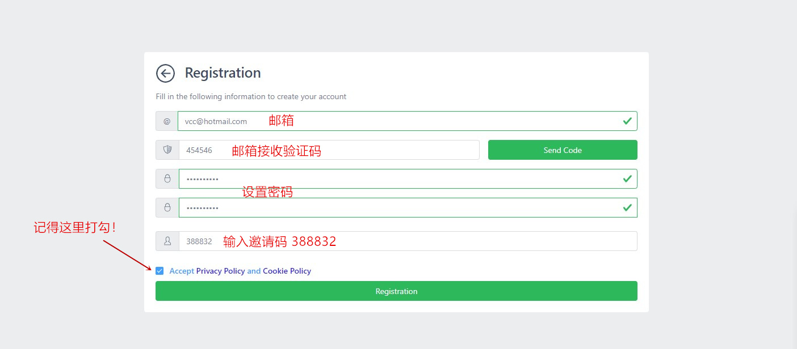
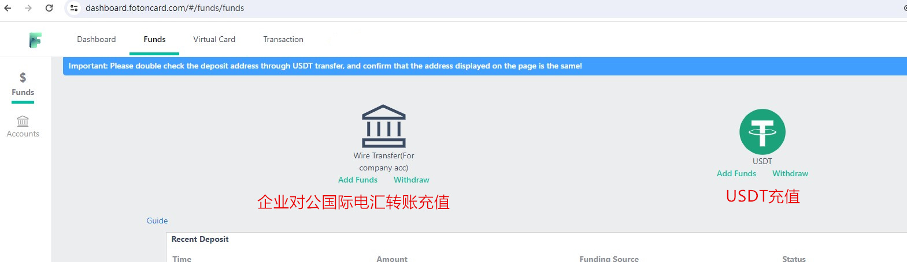
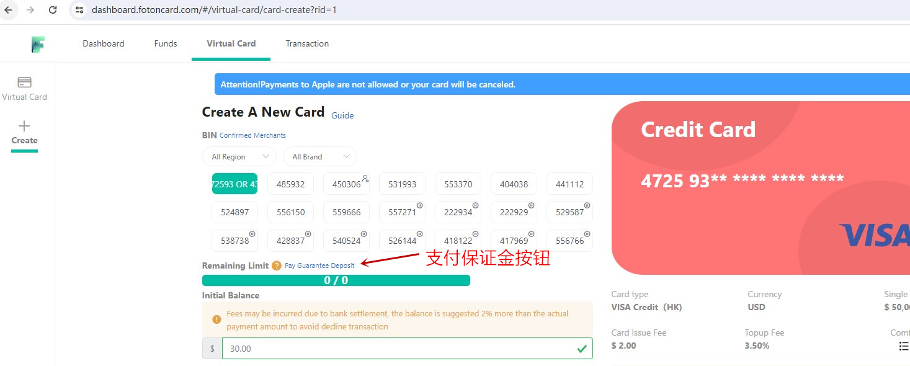
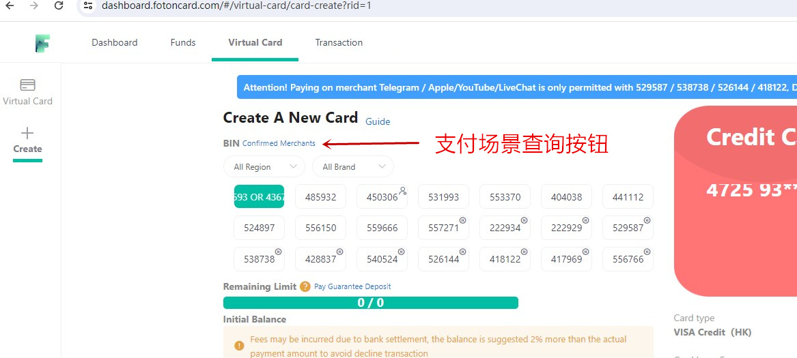
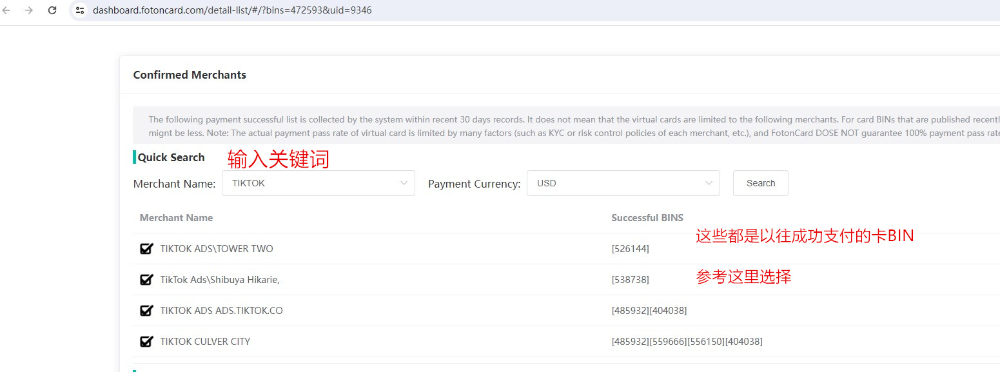
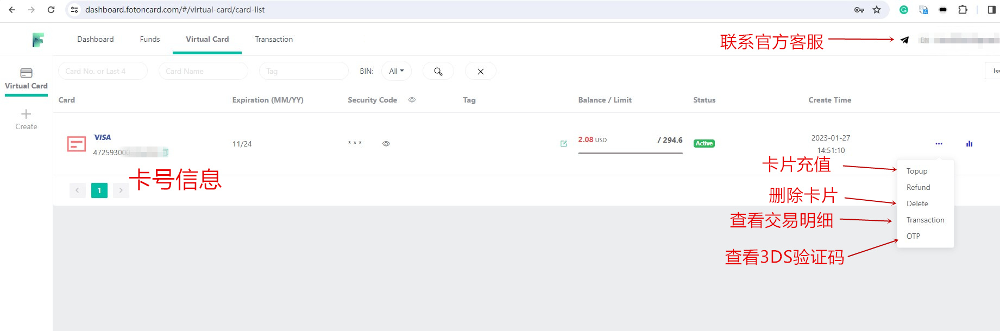
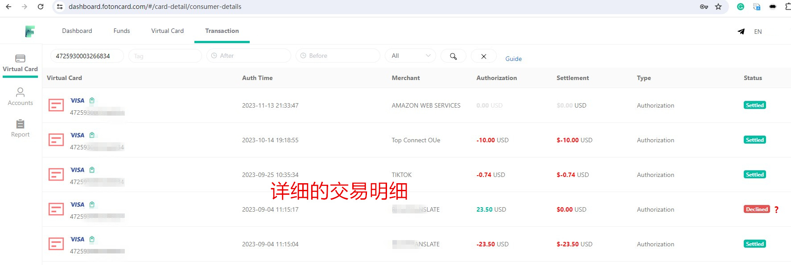

FotonCard——稳定靠谱的多卡BIN虚拟U卡使用测评
所谓“U卡”指的是通过加密货币例如常见的USDT/USDC等稳定币（俗称“U”）进行充值，从而创建出来的万事达Visa等卡组织的卡片。U卡广泛流行于币圈，这是在Crypto加密支付尚未普及的当下，实现Web3资产在现实世界支付的最流行方式，有效解决了币圈用户手中的加密货币无法在现实世界花掉的痛点，是非常成功的金融科技创新。
申请U卡通常需通过其官网或手机App。有的U卡服务商提供网页平台，用户通过浏览器注册登录后台申请；有的则提供App，需下载安装后注册充值开卡。无论哪种形式，步骤大体相同：注册账号、充值、开U卡。官网一般提供使用教程，或可咨询客服。
无论是实体还是虚拟U卡，主要费用包括开卡费和充值手续费。目前市场开卡费约20–200美元/张，充值手续费通常在5%左右。此外，部分卡BIN可能收取2%国际交易费或小额交易附加费，具体因卡而异。
U卡作为当前最火热的金融科技创新产品，已非“雨后春笋”，而是一片红海。从大型加密交易所到中小金融科技公司，纷纷推出自家U卡产品，如Bybit U卡、VCard、PokePay、THPay、LetsPay、WasabiCard、MyFin、Flat24、WildCard、Chlca、Binpay、OneKeyCard、Unioncash、Paytend、Biyapay速捷卡等。每家各有优劣，但消费者应优先选择长久稳定、资金安全有保障的服务商。
经过多年在众多虚拟U卡产品中摸爬滚打，我们认为FotonCard福田卡是最好的虚拟U卡提供商。
为何如此评价？ FotonCard成立于2020年，至今已稳定运营5年，远超一般U卡产品2年的生命周期，足见其可靠性。平台主要服务跨境电商、FB广告投放、AI人工智能等B端企业用户，凭借丰富风控经验（如保证金制度），有效过滤羊毛党与拒付党，保障卡BIN长期稳定。同时，FotonCard拥有众多优质发卡银行合作，持续上架新鲜卡BIN，目前后台提供数十款万事达/Visa卡BIN，满足各类国际支付场景。支持USDT充值，深受币圈用户青睐；无需KYC、免实名认证，在隐私泄露与电信诈骗频发的今天，体现了对用户信息安全的重视。此外，开卡费仅约2美元/张，充值手续费最低1%，且支持无限开卡，成本低廉，适合多场景大额支付需求。
首先，您需注册账户。打开FotonCard官网：https://fotoncard.com/，平台实行邀请制注册，必须输入邀请码：388832方可成功注册。

注册后需先充值才能开卡。推荐充值方式：

首次建议充值至少125美元。为保障卡BIN长期稳定、防止被恶意用户破坏，FotonCard实行保证金制度：新用户需支付100美元保证金方可开卡，45天后若拒付率与退款率达标，保证金将自动退回账户。此机制虽略显繁琐，却是平台长期稳定的“独门秘籍”，有效筛选合规用户。保证金支付按钮位于开卡页面，如有疑问可联系在线客服。

面对数十款卡BIN，如何选择？FotonCard提供“BIN协助选择（Confirmed Merchants）”功能，输入商户关键词（如“tiktok”），即可查询哪些卡BIN曾在该商户成功支付，辅助决策。

例如输入“tiktok”，系统将返回适用于TikTok的卡BIN列表。

请注意：该功能基于历史成功支付数据汇总，仅作参考。因国际支付风控复杂，不代表100%成功。若无数据，也不代表该卡BIN不适用，可能因商户小众、无历史记录所致。
开卡成功后，您将获得卡号、到期日、安全码等信息，可用于在线绑卡支付。卡片有效期约2年，期间可反复充值、随时删除、查看交易明细及3DS验证码。

以下是该卡的消费明细：

FotonCard福田U卡仅限用于合规的国际海外线上支付场景。高拒付率、高退款率行为一律禁止。平台提供4小时在线客服（后台页面右上角）。